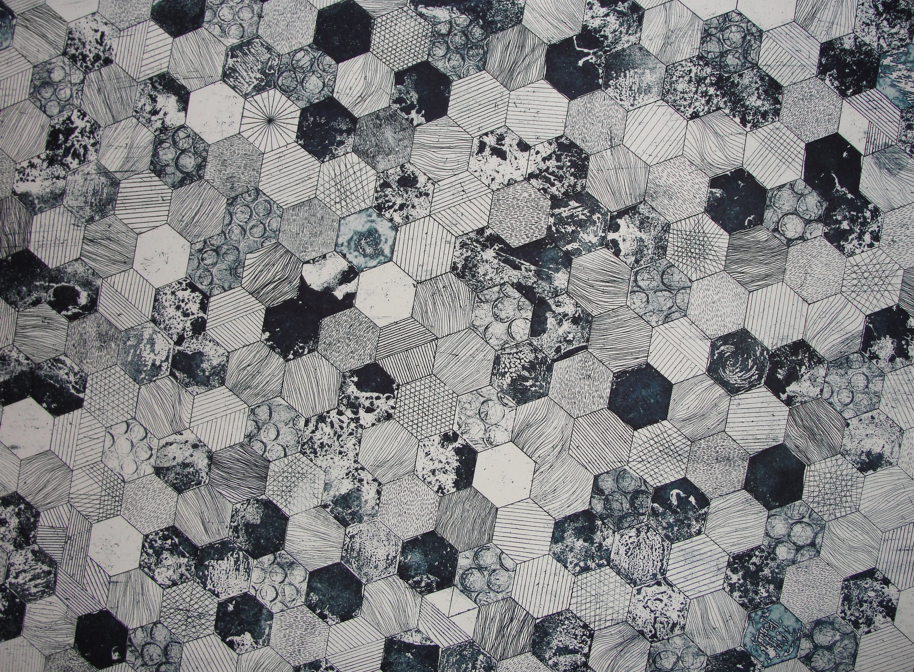

Minimal home server page
Simple space for photos, quick access to your server interfaces, and a live server status indicator.
Home server
Checking…
Looking up your server status from the configured endpoint.
Photos
Gallery of server and home setup photos. Replace the sample images with your own files in docs/images/.


Add your own photo here by placing a file in
docs/images/ and updating this card.
Server interfaces
Open the tools you use most often on your IPv6-connected home server.
This page is designed for a minimalistic personal server landing site. Edit docs/script.js to configure the exact status endpoint for your home server.